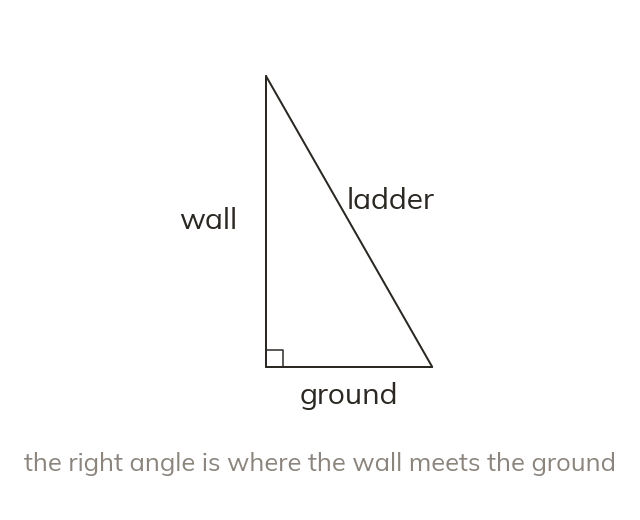

Sketch the triangle first
A context question rarely draws the triangle. Sketch it with the right angle marked. Then place each length on its side.
A context question rarely draws the triangle, so it is sketched with the right angle marked. Then each length is placed on its side.